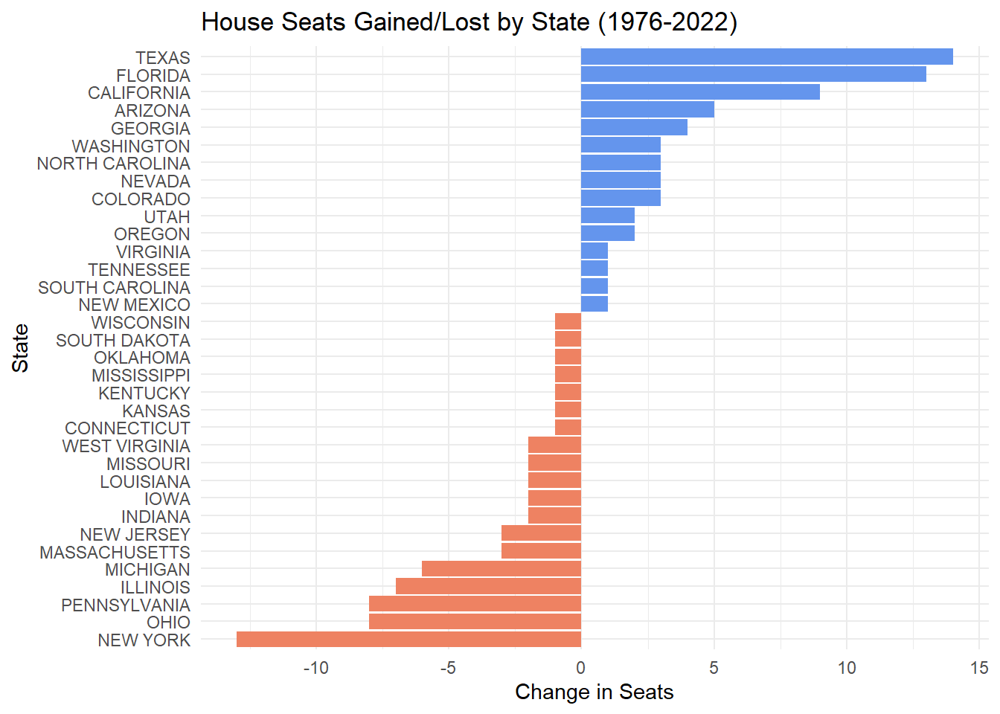
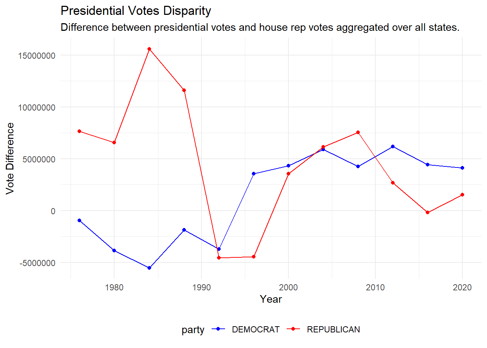
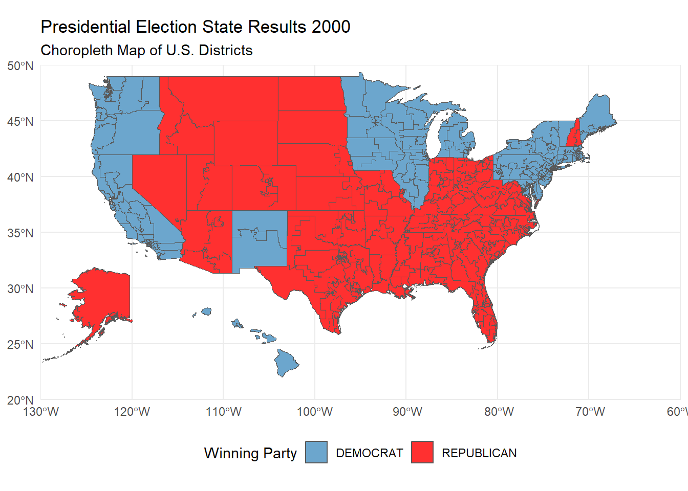

Code
library(readr)
library(sf)
library(dplyr)
library(tidyr)
library(tidyverse)
library(DT)
library(ggplot2)
library(gganimate)Chris Liu
The US electoral college system allocates votes for presidential candidates during the election year. The fine details have changed over the years in history but some basic principles remain the same. Each state receives R+2 electoral votes (ECVs), where R is the number of representatives a state has in the US House of Representatives. States are free to allocate the votes as they like, and the presidential candidate that wins is whoever wins the majority of the electoral college votes.
The Constitution has no ruling about how the states need to allocate the ECVs. Each individual state is responsible for their own system implementation. Throughout history, states have chosen to use the following schemes for electoral vote allocation:
Each of these allocation strategies will be discussed in-depth later.
The objective of this project is to identify how the outcome of the US presidential elections would have changed under different ECVs allocation rules. This will be done by exploring historical congressional election data that is available online.
The following packages will be used for this analysis: readr, sf, dplyr, tidyr, tidyverse, ggplot2, DT and gganimate. If these packages have not been installed in the system, they can be with the following code:
if (!require("readr")) install.packages("readr")
if (!require("sf")) install.packages("sf")
if (!require("dplyr")) install.packages("dplyr")
if (!require("tidyr")) install.packages("tidyr")
if (!require("tidyverse")) install.packages("tidyverse")
if (!require("DT")) install.packages("DT")
if (!require("ggplot2")) install.packages("ggplot2")
if (!require("gganimate")) install.packages("gganimate")Load the required libraries:
The first two data files that will need to be downloaded are provided by MIT Election Data Science Lab.1 The data sets we want in particular are the 1976–2022 U.S. House Elections and the 1976-2020 US Presidential Elections. These can be downloaded from the provided links in your browser.
The following code will read the CSV files and store them into dataframes to analyze.
The next set of data needed are the congressional districts shapefiles from 1976 to 2012. The files are provided by Jeffrey B. Lewis, Brandon DeVine, and Lincoln Pritcher with Kenneth C. Martis which can be found here. The following code will automatically download all the necessary files needed.
# Task 1: import congressional district data from cdmaps from 1976 to 2012
get_cdmaps_file <- function(fname) {
BASE_URL <- "https://cdmaps.polisci.ucla.edu/shp/"
fname_ext <- paste0(fname, ".zip")
if (!file.exists(fname_ext)) {
FILE_URL <- paste0(BASE_URL, fname_ext)
download.file(FILE_URL,
destfile = fname_ext
)
}
}
options(timeout = 180) # keep the downloads from potentially timing out
get_cdmaps_file("districts112") # January 5, 2011 to January 3, 2013
get_cdmaps_file("districts111") # January 6, 2009 to December 22, 2010
get_cdmaps_file("districts110") # January 4, 2007 to January 3, 2009
get_cdmaps_file("districts109") # January 4, 2005 to December 9, 2006
get_cdmaps_file("districts108") # January 7, 2003 to December 8, 2004
get_cdmaps_file("districts107") # January 3, 2001 to November 22, 2002
get_cdmaps_file("districts106") # January 6, 1999 to December 15, 2000
get_cdmaps_file("districts105") # January 7, 1997 to December 19, 1998
get_cdmaps_file("districts104") # January 4, 1995 to October 4, 1996
get_cdmaps_file("districts103") # January 5, 1993 to December 1, 1994
get_cdmaps_file("districts102") # January 3, 1991 to October 9, 1992
get_cdmaps_file("districts101") # January 3, 1989 to October 28, 1990
get_cdmaps_file("districts100") # January 6, 1987 to October 22, 1988
get_cdmaps_file("districts099") # January 3, 1985 to October 18, 1986
get_cdmaps_file("districts098") # January 3, 1983 to October 12, 1984
get_cdmaps_file("districts097") # January 5, 1981 to December 23, 1982
get_cdmaps_file("districts096") # January 15, 1979 to December 16, 1980
get_cdmaps_file("districts095") # January 4, 1977 to October 15, 1978
get_cdmaps_file("districts094") # January 14, 1975 to October 1, 1976The last set of data needed are the congressional districts shapefiles from 2014 to the present. The files will be taken from the US Census Bureau. The following code will download all necessary files as well.
# Task 2: import data from census
# download shape files for 113th congress
if (!file.exists("districts113.zip")) {
download.file("https://www2.census.gov/geo/tiger/TIGER2013/CD/tl_2013_us_cd113.zip",
destfile = "districts113.zip"
)
}
# download shape files for 114th congress
if (!file.exists("districts114.zip")) {
download.file("https://www2.census.gov/geo/tiger/TIGER2014/CD/tl_2014_us_cd114.zip",
destfile = "districts114.zip"
)
}
# download shape files for 115th congress
if (!file.exists("districts115.zip")) {
download.file("https://www2.census.gov/geo/tiger/TIGER2016/CD/tl_2016_us_cd115.zip",
destfile = "districts115.zip"
)
}
# download shape files for 116th congress
if (!file.exists("districts116.zip")) {
download.file("https://www2.census.gov/geo/tiger/TIGER2018/CD/tl_2018_us_cd116.zip",
destfile = "districts116.zip"
)
}Now that all the necessary data has been imported and ready to use, we can begin exploring the information we have available to us. The following questions can be answered by exploring the data.
Which states have gained and lost the most seats in the US House of Representatives between 1976 and 2022?
# find the number of seats each state has in 1976 and 2022
house_seats_1976_2022 <- house_rep_vote_count |>
filter(year %in% c(1976, 2022)) |>
group_by(year, state) |>
summarise(total_seats = n_distinct(district)) |> # count number of seats by number of electoral districts
select(year, state, total_seats)
# pivot table to find difference easily: state, 1976 seats, 2022 seats
house_seats_1976_2022_wide <- house_seats_1976_2022 |>
pivot_wider(names_from = year, values_from = total_seats, names_prefix = "total_seats_") |>
mutate(difference = total_seats_2022 - total_seats_1976)
# find the change in seats from 2022 to 1976
seat_changes <- house_seats_1976_2022_wide |>
select(state, difference)
# visual representation
seat_changes_filtered <- seat_changes |> # excluding zero for visual aesthetic
filter(difference != 0)
ggplot(seat_changes_filtered, aes(x = reorder(state, difference), y = difference, fill = difference > 0)) +
geom_bar(stat = "identity", show.legend = FALSE) +
scale_fill_manual(values = c("salmon2", "cornflowerblue")) + # Blue for increases, red for decreases
coord_flip() + # Flip coordinates for horizontal bars
labs(title = "House Seats Gained/Lost by State (1976-2022)",
x = "State",
y = "Change in Seats") +
theme_minimal()
Evidently, Texas gained the most number of seats in the house of representatives between 1976-2022. On the other hand, New York lost the most since in the same time frame. This indicates that Texas had the largest proportional change in population since 1976. The overall population of the US has shifted away from New York and into other states over the years. The tables below show the exact number of seats changed over the time period.
# take a closer look at the exact number of seats gained
gained_seats <- seat_changes |>
arrange(desc(difference)) |>
filter(difference > 0)
datatable(setNames(gained_seats, c("State", "Seats Gained")),
options = list(pageLength = 10, autoWidth = TRUE),
caption = "Table 1: House Seats Gained (1976-2022)"
)Are there any elections in our data where the election would have had a different outcome if the “fusion” system was not used and candidates only received the votes their received from their “major party line” (Democrat or Republican) and not their total number of votes across all lines?
A “fusion” voting system is when one candidate can appear on multiple “lines” on the ballot and their vote counts are totaled.
# find the historical winner based on the total votes received on tickets (which includes the fusion system)
house_election_winner <- house_rep_vote_count |>
group_by(year, state, district, candidate) |>
summarize(total_votes = sum(candidatevotes), .groups = 'drop') |> # aggregate votes across different parties on ticket for fusion ticket candidates
group_by(year, state, district) |>
slice_max(order_by = total_votes, n = 1, with_ties = FALSE) |> # find the winner based on who has the most total votes
rename(historical_winner = candidate) # rename for conventional understanding
# find winner without fusion system
primary_party_winner <- house_rep_vote_count |>
group_by(year, state, district, candidate, party) |>
summarize(primary_party_votes = sum(candidatevotes), .groups = "drop") |>
group_by(year, state, district) |>
slice_max(order_by = primary_party_votes, n = 1, with_ties = FALSE) |>
rename(single_party_winner = candidate) |> # rename for conventional understanding
select(-party) # deselecting since I'm only interested in the candidate name and votes
# find any elections where the historical winner is not the same as the single major party winner
potential_election_changes <- house_election_winner |>
left_join(primary_party_winner, by = c("year", "state", "district")) |>
mutate(different_outcome = historical_winner != single_party_winner) |> # create a logic column checks if the outcomes were the same or not
filter(different_outcome == TRUE) |> # filter where the historical winner is not the same as the single party vote winner
select(-different_outcome)
datatable(setNames(potential_election_changes, c("Year", "State", "District", "Historical Winner", "Votes (with fusion)", "Single Party Winner", "Single Party Votes")),
options = list(pageLength = 10, autoWidth = TRUE),
caption = "Table 3: Potential Differences in House Elections Due to Fusion Voting"
)
There are 24 district elections in history where the outcome could have been different if the fusion voting system was not in place. The majority of these occurrences take place in New York.
Do presidential candidates tend to run ahead of or run behind congressional candidates in the same state? That is, does a Democratic candidate for president tend to get more votes in a given state than all Democratic congressional candidates in the same state?
Does this trend differ over time? Does it differ across states or across parties? Are any presidents particularly more or less popular than their co-partisans?
# aggregate votes by year, state, and party for house candidates
congressional_party_votes <- house_rep_vote_count |>
group_by(year, state, party) |>
summarize(total_congressional_votes = sum(candidatevotes, na.rm = TRUE), .groups = "drop")
# aggregate votes by year, state, and party for presidential candidates
presidential_party_votes <- presidential_vote_count |>
group_by(year, state, party_detailed) |>
summarize(total_presidential_votes = sum(candidatevotes, na.rm = TRUE), .groups = "drop") |>
rename(party = party_detailed) # renaming for joining convention
# find difference between presidential votes and congressional
vote_disparity <- presidential_party_votes |>
inner_join(congressional_party_votes, by = c("year", "state", "party")) |>
mutate(vote_difference = total_presidential_votes - total_congressional_votes) |>
select(-total_presidential_votes, -total_congressional_votes)
# focus on Democrat and Republican parties for trends since these are the two major parties
# group by year and party summing across the United States
vote_disparity_year <- vote_disparity |>
filter(party %in% c("DEMOCRAT", "REPUBLICAN")) |>
group_by(year, party) |>
summarize(total_vote_difference = sum(vote_difference))
ggplot(vote_disparity_year,
aes(x = year,
y = total_vote_difference,
color = party)) +
geom_point() +
geom_line() +
scale_color_manual(values = c("DEMOCRAT" = "blue", "REPUBLICAN" = "red")) +
labs(title = "Presidential Votes Disparity",
subtitle = "Difference between presidential votes and house rep votes aggregated over all states.",
x = "Year",
y = "Vote Difference") +
theme_minimal() +
theme(legend.position = "bottom")
Over time, the Democratic presidential nominee has gained more votes in the US than their house constituents. The Republican presidential nominee has slowly lost popularity and received similar votes to their house constituents over time.
The 1984 and 1988 presidential elections were the only elections where the Republican candidate received at least 10 million more votes than their co-partisans running for the house of representatives. The candidates at the time were Ronald Reagan and George H.W. Bush respectively, both of which ended up winning the presidential election.
# group by state and party
vote_disparity_state <- vote_disparity |>
filter(party %in% c("DEMOCRAT", "REPUBLICAN")) |>
group_by(state, party) |>
summarize(average_vote_difference = round(mean(vote_difference), digits = 0))
datatable(setNames(vote_disparity_state, c("State", "Party", "Average Vote Difference")),
options = list(pageLength = 10, autoWidth = TRUE),
caption = "Table 4: Average Vote Difference Presidential Candidate Receives vs House Reps"
)
The table above shows the average vote difference that the presidential candidate receives as compared to their house representative counterparts. The average varies from state to state, exploring the entire table can provide insight into how citizens vote in each state. An interesting insight is that Massachusetts has historically leaned blue in the presidential race, but on average the presidential candidate receives less votes than the constituents combined. Florida tends to be a battleground state in presidential election years, this is seen as both parties draw a significant amount of more votes in for the presidential candidate than the house representatives.
Earlier we downloaded zip files for the US congressional districts. In order to access the shapefiles, we can automate a zip file extraction with some code.
# the following code writes a function that can read any zip file and extract the shapefile within
read_shp_from_zip <- function(zip_file) {
temp_dir <- tempdir() # Create a temporary directory
zip_contents <- unzip(zip_file, exdir = temp_dir) # Unzip the contents and
shp_file <- zip_contents[grepl("\\.shp$", zip_contents)] # filter for .shp files
sf_object <- read_sf(shp_file) # Read the .shp file into an sf object
return(sf_object) # Return the sf object
}To get a better idea of what can be done with the shapefiles, a chloropleth visualization of the electoral college results for the 2000 presidential election will be created.
zip_file <- "districts106.zip" # district 106 corresponds to when the 2000 elections took place
shapefile_us <- read_shp_from_zip(zip_file)
# Task 5: Choropleth Visualization of 2000 Electoral College Results
# find election results in each state
winner_2000_election <- presidential_vote_count |>
filter(year == 2000) |> # 2000 election
group_by(state, party_simplified) |> # I want to find the total votes by state and party
summarize(total_votes = sum(candidatevotes), .groups = "drop") |> # sum the votes across all districts
group_by(state) |> # group by state to find the top candidate in each state
slice_max(total_votes, n = 1) |>
ungroup() |>
select(state, party_simplified) |> # don't care for the amount of votes, just the winner
rename(winning_party = party_simplified) # rename for convention, will use to fill the choropleth
# join the shape file to election results
shapefile_us_2000 <- shapefile_us |>
mutate(STATENAME = toupper(trimws(STATENAME))) |> # need to match the characters from both tables to join correctly
left_join(
winner_2000_election,
join_by(STATENAME == state)
)
# create Choropleth of contiguous US first
contiguous_us <- ggplot(shapefile_us_2000,
aes(
geometry = geometry,
fill = winning_party
),
color = "black"
) +
geom_sf() +
scale_fill_manual(values = c("DEMOCRAT" = "skyblue3", "REPUBLICAN" = "firebrick1")) +
theme_minimal() +
labs(
title = "Presidential Election State Results 2000",
subtitle = "Choropleth Map of U.S. Districts",
fill = "Winning Party"
) +
theme(legend.position = "bottom") +
coord_sf(xlim = c(-130, -60), ylim = c(20, 50), expand = FALSE)
# Alaska inset
alaska_sf <- shapefile_us_2000[shapefile_us_2000$STATENAME == "ALASKA", ] # pull Alaska sf info to plot individually
inset_alaska <- ggplot(alaska_sf,
aes(
geometry = geometry,
fill = winning_party
),
color = "black"
) +
geom_sf() +
scale_fill_manual(values = c("DEMOCRAT" = "skyblue3", "REPUBLICAN" = "firebrick1")) +
theme_void() +
theme(legend.position = "none") + # will display legend on the contiguous plot
coord_sf(xlim = c(-180, -140), ylim = c(50, 72), expand = FALSE)
# Hawaii inset
hawaii_sf <- shapefile_us_2000[shapefile_us_2000$STATENAME == "HAWAII", ] # pull Hawaii sf info to plot individually
inset_hawaii <- ggplot(hawaii_sf,
aes(
geometry = geometry,
fill = winning_party
),
color = "black"
) +
geom_sf() +
scale_fill_manual(values = c("DEMOCRAT" = "skyblue3", "REPUBLICAN" = "firebrick1")) +
theme_void() +
theme(legend.position = "none") + # will display legend on the contiguous plot
coord_sf(xlim = c(-161, -154), ylim = c(18, 23), expand = FALSE)
combined_map <- contiguous_us +
annotation_custom(ggplotGrob(inset_alaska),
xmin = -120, xmax = -130, # Adjust position for Alaska
ymin = 15, ymax = 40
) +
annotation_custom(ggplotGrob(inset_hawaii),
xmin = -115, xmax = -100, # Adjust position for Hawaii
ymin = 20, ymax = 30
) # Adjust these values to fit
# Print the combined map
print(combined_map)
animated map
Taking a look at the ECVs allocation schemes mentioned earlier, we can explore historical data to compare the derive the winning presidential candidate under each scheme and compare it to the actual historical winner.
The first task at hand is to identify the number of electoral votes each state has in each election year as it has changed over time.
# find number of electoral votes each state has each year
electoral_votes_by_state <- house_rep_vote_count |>
group_by(year, state) |>
summarize(total_reps = n_distinct(district)) |>
mutate(electoral_votes = total_reps + 2) |> # R+2 votes
select(year, state, electoral_votes)
# add DC votes
electoral_votes_by_state <- electoral_votes_by_state |>
ungroup() |>
add_row(year = 1976, state = "DISTRICT OF COLUMBIA", electoral_votes = 3) |>
add_row(year = 1980, state = "DISTRICT OF COLUMBIA", electoral_votes = 3) |>
add_row(year = 1984, state = "DISTRICT OF COLUMBIA", electoral_votes = 3) |>
add_row(year = 1988, state = "DISTRICT OF COLUMBIA", electoral_votes = 3) |>
add_row(year = 1992, state = "DISTRICT OF COLUMBIA", electoral_votes = 3) |>
add_row(year = 1996, state = "DISTRICT OF COLUMBIA", electoral_votes = 3) |>
add_row(year = 2000, state = "DISTRICT OF COLUMBIA", electoral_votes = 3) |>
add_row(year = 2004, state = "DISTRICT OF COLUMBIA", electoral_votes = 3) |>
add_row(year = 2008, state = "DISTRICT OF COLUMBIA", electoral_votes = 3) |>
add_row(year = 2012, state = "DISTRICT OF COLUMBIA", electoral_votes = 3) |>
add_row(year = 2016, state = "DISTRICT OF COLUMBIA", electoral_votes = 3) |>
add_row(year = 2020, state = "DISTRICT OF COLUMBIA", electoral_votes = 3) |>
distinct() # avoid any duplicate entries in caseWhichever candidate receives the most votes in the state wins all the electoral votes.
# find the candidate with the most votes each year in each state
state_wide_winner_take_all <- presidential_vote_count |>
group_by(year, state, candidate) |>
summarize(total_votes = sum(candidatevotes), .groups = "drop") |>
group_by(year, state) |>
slice_max(order_by = total_votes, n = 1, with_ties = FALSE) |> # find the winner of each state based on who has the most total votes
rename(winner = candidate) # rename for conventional understanding
# join the state, winner, and number of electoral votes & sum which candidate that gets the most electoral votes
state_wide_winner_take_all <- state_wide_winner_take_all |>
left_join(electoral_votes_by_state,
by = c("year", "state")
) |>
group_by(year, winner) |>
summarize(total_electoral_votes = sum(electoral_votes)) |> # sum electoral votes across all states by candidate each year
slice_max(order_by = total_electoral_votes, n = 1, with_ties = FALSE)
datatable(setNames(state_wide_winner_take_all, c("Year", "Winning Candidate", "Electoral Votes")),
options = list(pageLength = 12, autoWidth = TRUE),
caption = "Table 5: State-Wide Winner-Take-All: Presidential Winning Candidate"
)Each district electoral vote is assigned to the district winner, and whichever candidate wins the popular vote in the state wins the remaining 2 at large votes.
Assume the winning party of the house district is the same for the president.
# find number of districts each party won to represent electoral votes won in each state
district_winner <- house_rep_vote_count |>
group_by(year, state, district) |>
slice_max(order_by = candidatevotes, n = 1, with_ties = FALSE) |>
select(year, state, district, party) |>
group_by(year, state, party) |>
summarize(districts_won = n()) # number of electoral votes received by each party
# find popular vote winner in the state
at_large_winner <- house_rep_vote_count |>
group_by(year, state) |>
slice_max(order_by = candidatevotes, n = 1, with_ties = FALSE) |>
select(year, state, party) |>
add_column(at_large_votes = 2) # designating the vote count
# join tables together to find total electoral votes the presidential party receives in each state
district_wide_winner_take_all <- district_winner |>
left_join(at_large_winner,
by = c("year", "state", "party")
) |>
mutate(across(where(is.numeric), ~ ifelse(is.na(.), 0, .))) |> # set NA to 0 for the rows that had no resulting joins
mutate(total_electoral_votes = districts_won + at_large_votes) |>
select(-districts_won, -at_large_votes) |>
rename(party_simplified = party) |> # rename for easier joining convention
left_join(presidential_vote_count,
by = c("year", "state", "party_simplified")
) |> # join to presidential candidate
select(year, state, total_electoral_votes, candidate) |>
group_by(year, candidate) |>
summarize(electoral_votes = sum(total_electoral_votes)) |>
slice_max(order_by = electoral_votes, n = 1, with_ties = FALSE) |>
drop_na() # get rid of the non-presidential election years
datatable(setNames(district_wide_winner_take_all, c("Year", "Winning Candidate", "Electoral Votes")),
options = list(pageLength = 12, autoWidth = TRUE),
caption = "Table 6: District-Wide Winner-Take-All: Presidential Winning Candidate"
)Electoral votes are distributed based on the percentage of the popular vote the candidate receives in the state.
# find the percentage of the votes received in each state
state_wide_proportional <- presidential_vote_count |>
select(year, state, candidate, candidatevotes, totalvotes) |>
mutate(percentage_state_votes = (candidatevotes / totalvotes)) |>
select(-candidatevotes, -totalvotes)
# find the number of electoral votes received by each candidate
state_wide_proportional <- state_wide_proportional |>
left_join(electoral_votes_by_state,
by = c("year", "state")
) |>
mutate(votes_received = round(percentage_state_votes * electoral_votes, digits = 0)) |>
select(-percentage_state_votes, -electoral_votes)
# sum total votes and find presidential winner
state_wide_proportional <- state_wide_proportional |>
group_by(year, candidate) |>
summarize(total_electoral_votes = sum(votes_received)) |>
slice_max(order_by = total_electoral_votes, n = 1, with_ties = FALSE) |>
rename(winner = candidate)
datatable(setNames(state_wide_proportional, c("Year", "Winning Candidate", "Electoral Votes")),
options = list(pageLength = 12, autoWidth = TRUE),
caption = "Table 7: State-Wide Proportional: Presidential Winning Candidate"
)Take a look at the overall popular vote across the US, the candidate receives the number of electoral votes based on the percentage of the popular vote they received.
# find total number of electoral votes available
electoral_votes_available <- electoral_votes_by_state |>
group_by(year) |>
summarize(electoral_college_votes = sum(electoral_votes))
# find percentage of popular vote each candidate received
national_proportional <- presidential_vote_count |>
select(year, state, candidate, candidatevotes) |>
group_by(year, candidate) |>
summarize(total_electoral_votes = sum(candidatevotes)) |>
group_by(year) |>
mutate(population_vote_count = sum(total_electoral_votes)) |> # find total number of votes cast in election year
ungroup() |>
mutate(percentage_population_vote = (total_electoral_votes / population_vote_count)) |>
select(-total_electoral_votes, -population_vote_count) |>
# find the proportion of the electoral votes received based on the popular vote percentage
left_join(
electoral_votes_available,
join_by(year == year)
) |>
mutate(electoral_votes_received = round(percentage_population_vote * electoral_college_votes, digits = 0)) |>
select(-percentage_population_vote, -electoral_college_votes) |>
group_by(year) |>
slice_max(order_by = electoral_votes_received, n = 1, with_ties = FALSE) |>
rename(winner = candidate)
datatable(setNames(national_proportional, c("Year", "Winning Candidate", "Electoral Votes")),
options = list(pageLength = 12, autoWidth = TRUE),
caption = "Table 8: National Proportional: Presidential Winning Candidate"
)
To do so, you should first determine which allocation scheme you consider “fairest”. You should then see which schemes give different results, if they ever do. To make your fact check more compelling, select one election where the ECV scheme had the largest impact–if one exists–and explain how the results would have been different under a different ECV scheme.
Each electoral college vote allocation scheme has its own pros and drawbacks. I believe that the national proportional allocation scheme is the “fairest” strategy out of all schemes. It is representative of the entire nation’s voting populations interests. The president is the governing entity of the entire nation, the national proportional scheme represents the entire nation’s interests as a whole. The population of the United States is not distributed evenly across all the states, thus this scheme is fair since it accounts for everyone’s vote regardless of where they reside.
The state-wide proportional scheme is the next “fairest” allocation system that can be implemented. It is similar to the national-proportional in nature but it takes a step down and looks at the interests of the voters by state instead. Since different opinions can exist throughout a state, this allocates a fairer distribution of votes. The only drawback is that the representation is not on a national level, but on a state by state level. There can be a slight skew in favoritism since each state has a different amount of electoral votes available.
In my opinion, the state-wide winner-take-all and district-wide winner-take-all are the least “fair” allocation systems. They do not offer a true representation of the nation’s interests, but focus on a subset of opinions that may not be commonly held by the entire nation. The state-wide winner-take-all system suffers from representing the entire sentiment of the voters in a state. A small majority win can tip the balance to one party, whilst ignoring the remaining voter’s opinions in the state. The district-wide winner-take-all system examines the opinions of voter’s on a district level. Although this may seem fair since each district has a voice, the distribution can be skewed since the districts don’t represent the population size located within. Political tactics like gerrymandering can greatly effect the voices of voters and not reflect the overall voter preferences.
The 2000 presidential election is an example of where the electoral college vote scheme had the greatest impact on the results. The national proportional scheme solely determined that Al Gore would have won the election. Every other scheme resulted in George W. Bush winning the election, including the historical one.
MIT Election Data + Science Lab. (n.d.). MIT Election Lab. MIT Election Data + Science Lab. https://electionlab.mit.edu/↩︎